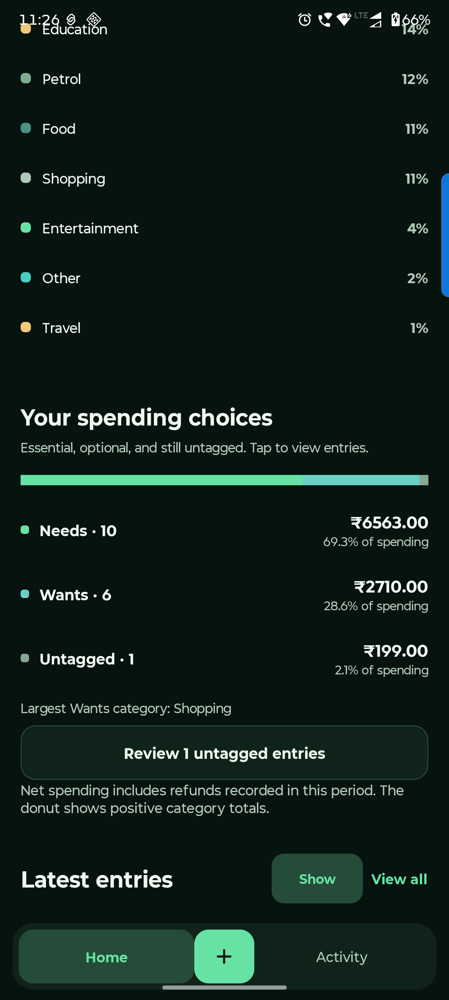

Android handbook · 6.1.0-preview.14
Read spending & find entries.
Charts, Need / Want, Activity and quick entry.
Home → At a glance / Your spending choices
Understand where it went.
Home explains your personal spending. Activity helps you find and correct the entries behind it.
Choose a period
Use This Month, Last Month, This Year or All Time. Period filters change income and spending; account balances remain current.
Read the categories and tags
Tap a category to inspect its chart share. Tap Needs, Wants or Untagged to view matching entries. Review untagged entries when convenient.
Find the original in Activity
Search a category or note. Use entry-type tabs and Filters. Open an entry for edit, tag and delete options; check linked repayments before changing shared records.
Refunds reduce net spending. The donut shows positive category totals, so its total can differ from a net figure. Show / Hide controls recent entries on Home.

Questions you might have.
Where do I change theme, currency or entry choices?
Open Settings → Preferences for System / Light / Dark, currency and defaults. Categories & payments manages your entry options. These settings do not add new money.
Why are the chart and net spending different?
Refunds reduce net personal spending. The donut uses positive category totals. Also check the period, account view and any filters.
Can I keep recent entries private?
Use Hide in Latest entries on Home. Show reveals them again. This changes the preview, not your stored transactions.